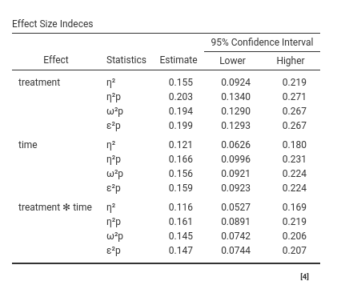

Details: GLM effect size indices
keywords jamovi, GLM, effect size indices, omega-squared, eta-squared, epsilon-squared
GALMj version ≥ 2.4.0
Introduction
Standardized Effect size indices produced by GLM module are the following:
- \(\beta\) : standardized regression coefficients
- \(\eta^2\): (semi-partial) eta-squared
- \(\eta^2\)p : partial eta-squared
- \(\omega^2\) : omega-squared
- \(\omega^2\)p : partial omega-squared
- \(\epsilon^2\) : epsilon-squared
- \(\epsilon^2\)p : partial epsilon-squared
All coefficients but the betas are computed with the approapriate function of the R package effectsize
\(\beta\) : beta
For continuous variables, it simply corresponds to the B coefficient obtained after standardizing all variables in the model. The standardization of the continuous variables is done before any transformation is applied, so if a complex model requires interaction or polynomial terms, the terms are computed after standardization, and the \(\beta\) are consistent.
For categorical variables, however, some comments are in order: Categorical variables are not standardized in GAMLj, so the \(\beta\) should be interpreted in terms of standardized differences in the dependent variable between the levels contrasted by the corresponding contrast. Consider the following example: Two groups (variable groups) of size 20 and 10 respectively, are compared on a variable Y. If one uses GAMLj default contrast coding (simple), the B is the difference in groups means. The \(\beta\) is the difference between the average z-scores of the dependent variable between the two groups. Assume these are the results:

The beta is 0.352, so it means that if we compute the mean difference between groups in the standardized y, we obtain 0.352. In fact.

However, the \(\beta\) you obtain is not the correlation between zy and groups. The correlation is 0.169:

Why is there this discrepancy? Because the groups are not balanced, so when the correlation is computed, the variable groups is standardized, so the contrast coding values depend on the relative size of the groups. The actual groups coding values used by the Pearson’s correlations are the following:

Thus, the correlation corresponds to running a regression with zy as dependent variables and a continuous variable featuring either -.695 or 1.390 as values. The \(\beta\) yielded by GAMLj, instead, is the mean difference between X levels on the standardized Y. Please notice that other software may yield different \(\beta\)’s for categorical variables.
If the groups are balanced and homeschedastic, the \(\beta\) associated with a simple contrast corresponds to the fully standardized coefficient.
\(\eta^2\): (semi-partial) eta-squared
This is the proportion of total variance uniquely explained by the associated effect. Being \(SS_{eff}\) the sum of squares of the effect and \(SS_{res}\) the sum of squares residuals or of error, and \(SS_{model}\) the sum of sum of squares of the whole model, we have:
\[\eta^2={{SS_{eff} \over {SS_{model}+SS_{res}}}}\]
where \(SS_{model}+SS_{res}=SS_{total}\) and \(SS_{total}=\sum(y_i-\bar{y})^2\) and \(SS_{model}=\sum(\hat{y_i}-\bar{\hat{y}})^2\).
Please notice that although the computation of the effect size indexes is carried out employing effectsize R package, GAMLj makes a correction to the computation of \(\eta^2\) and the other non-partial indices. effectsize R package, infact, defines the total sum of squares as \(SS_{total}^*=\sum{SS_{eff}+SS_{res}}\), where \(eff\) is any effect in the model. For balanced designs and other models, \(SS_{total}^*=SS_{total}\), so no issue arises. However, there are certain models in which \(SS_{total}^*\ne SS_{total}\), and so the index looses some of its proporties when computed based on \(SS_{total}^*\). GAMLj operates a correction such that all the non-partial indeces are always computed based on \(SS_{total}=SS_{model}+SS_{res}\).
\(\eta^2\)p : partial eta-squared
This is the proportion of partial variance uniquely explained by the associated effect. That is, the variance uniquely explained by the effect expressed as the proportion of variance not explained by the other effects. Here the variance explained by the other effects in the model is completely partialed out. Its formula is:
\[\eta^2p={{SS_{eff} \over {SS_{eff}+SS_{res}}}}\]
clearly, if there is only one independent variable, \(\eta^2=\eta^2p\)
\(\omega^2\)p : partial omega-squared
This is the expected value in the population of the proportion of partial variance uniquely explained by the associated effect. In other words,it is the unbiased version of \(\eta^2p\). There are different formulas to visualize its computation, here is one. If \(df_{res}\) are the degrees of freedon of the residual variance, \(df_{eff}\) are the degrees of freedom of the effect, and N is the sample size, we have:
\[\omega^2p={{SS_{eff}-SS_{res} \cdot ({df_{eff}/df_{res}) \cdot }}\over{ SS_{eff}+SS_{res} \cdot [{(N-df_{eff}+1)/df_{res}}] }}\]
It’s clear that omega is similat to \(\eta^2p\), but applies a correction for the degress of freedom. In fact, as N increases, the two indices converge.
Notice that this formula, which is used by effectsize R package is defined in Maxwell, Delaney, and Kelley (2017) and other sources, and it is slightly different from the one defined by Olejnik and Algina (2003) . The difference is that in the denominator the residuals SS is multiplied by \((N-df_{eff}+1)/df_{res}\) whereas in Olejnik and Algina (2003) is multiplied by \((N-df_{eff})/df_{res}\). Obviously, the two formulas gives appreciable different results on for vary small samples.
\(\epsilon^2\)p : epsilon-squared
Epsilon-squared is another correction of \(\eta^2\), but the correction involves only the estimation of the sum of squares of the effect, not the partial variance on which the effect is compared
\[\epsilon^2={{SS_{eff}-SS_{res} \cdot ({df_{eff}/df_{res}) \cdot }}\over{ SS_{model}+SS_{res}}}\]
\(\epsilon^2\)p : partial epsilon-squared
As for the non-partial Epsilon, the partial Epsilon-squared is a correction of \(\eta^2p\), but the correction involves only the estimation of the sum of squares of the effect, not the partial variance on which the effect is compared
\[\epsilon^2p={{SS_{eff}-SS_{res} \cdot ({df_{eff}/df_{res}) \cdot }}\over{ SS_{eff}+SS_{res}}}\]
Confidence intervals
In option tab Options it is possible to ask additional tables for the effect size indices, containing the effect size indices and their confidence intervals


Details for the confidence intervals computation can be found in Ben-Shachar, Makowski & Lüdecke (2020). Compute and interpret indices of effect size. CRAN
Comments?
Got comments, issues or spotted a bug? Please open an issue on GAMLj at github“ or send me an email
Maxwell, Scott E, Harold D Delaney, and Ken Kelley. 2017. Designing Experiments and Analyzing Data: A Model Comparison Perspective. Routledge.
Olejnik, Stephen, and James Algina. 2003. “Generalized Eta and Omega Squared Statistics: Measures of Effect Size for Some Common Research Designs.” Psychological Methods 8 (4). American Psychological Association: 434.